cuticul.mn — Ажилтны HR-ийг гар утаснаасаа хэрхэн ашиглах бүрэн заавар бэлдлээ. Нэвтрэхээс эхлээд ирц, цалин, чөлөө, хуваарь хүртэл.
«HR хэсэг» нь ажилтан бүр өөрийн ажлын мэдээллээ гар утаснаасаа удирдах систем. Доорх боломжуудтай.
Нэвтрэх хуудас нь нүүр хуудасны лого дээр 2 удаа дарж нээгддэг.
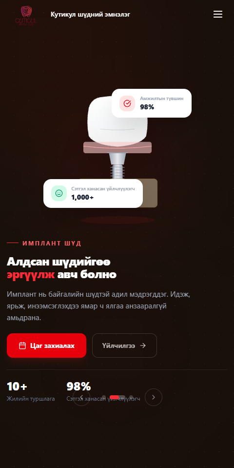
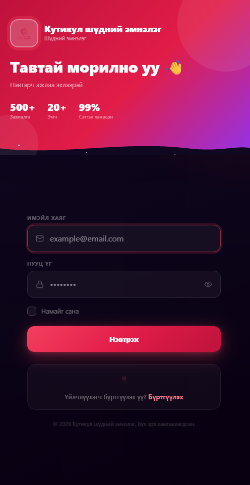
Хэрэв та хоёр үүрэгтэй (жишээ нь ресепшн + хувийн HR) бол хаашаа орохоо сонгоно.
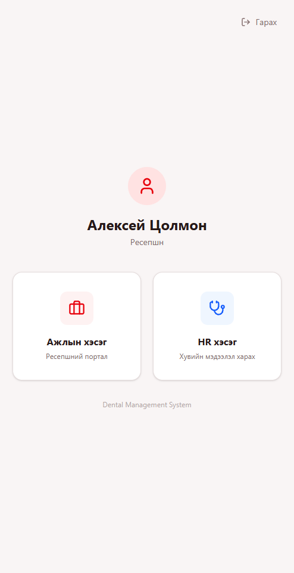
Хөтчөөр болгон орох шаардлагагүй — нүүр дэлгэцэд дүрс нэмбэл жинхэнэ апп шиг нэг товшилтоор нээгдэнэ.
Нэвтэрмэгц энэ дэлгэц нээгдэнэ. Өнөөдрийн ажлын мэдээлэл бүгд нэг дор.
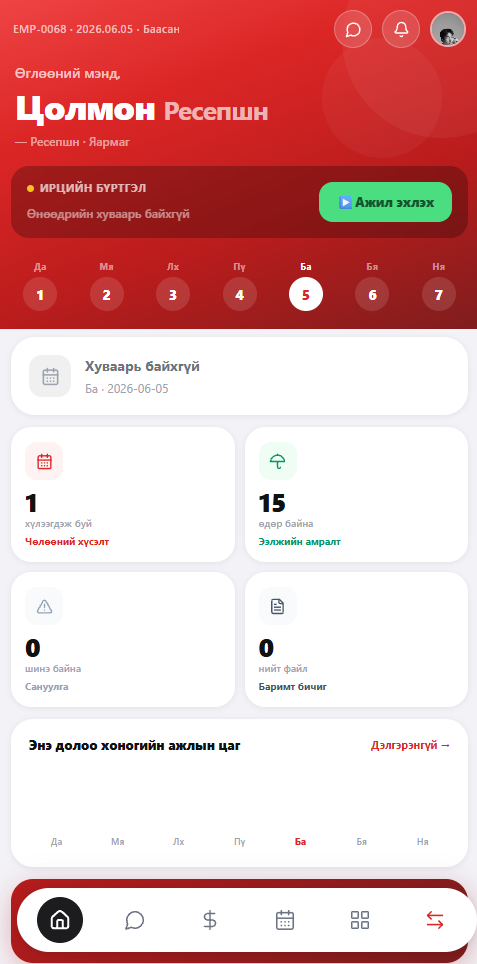
HR болон хамт олонтойгоо системийн дотор шууд харилцана.
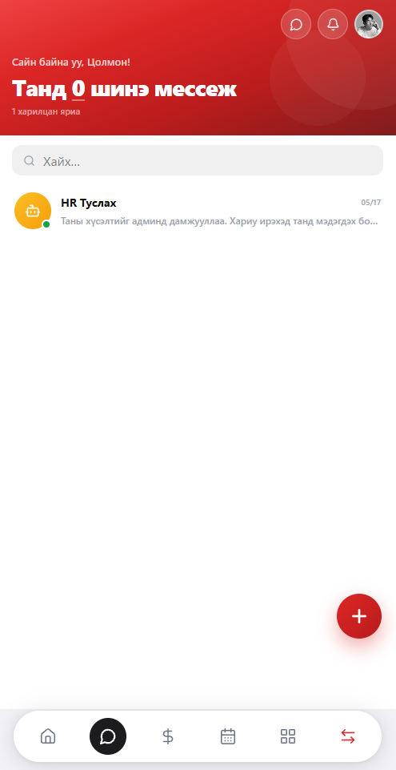
Сар бүрийн цалингаа дэлгэрэнгүйгээр — нэмэгдэл, суутгал, гарт олгох дүн хүртэл.
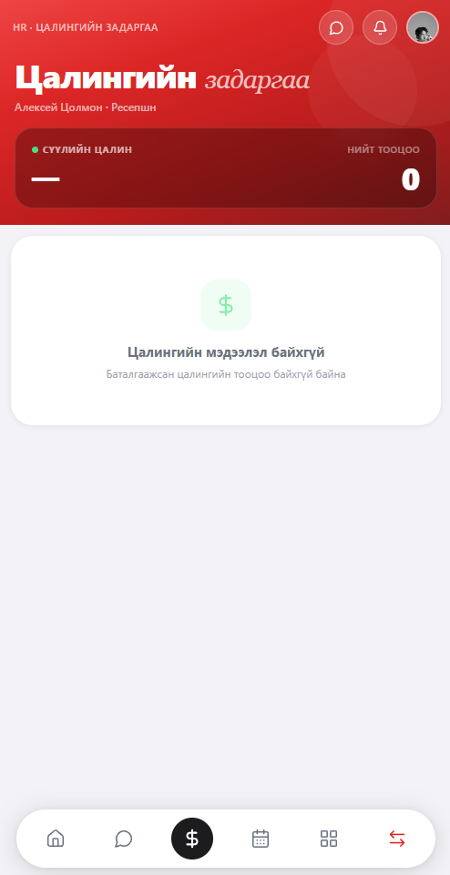
Өвчтэй эсвэл хувийн шалтгаанаар чөлөө авах хүсэлтээ илгээж, HR-ийн хариуг хянана.
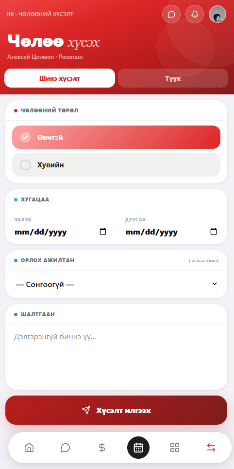
Ээлжийн хуваариа календараар урьдчилан хараарай.
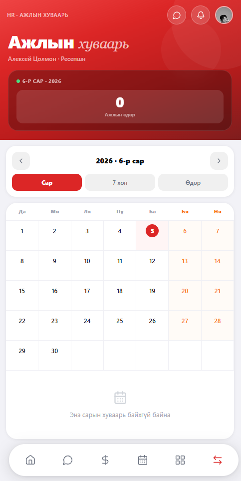
Эмнэлгийн номыг түрээслэх, өөрт хариуцуулсан тоног төхөөрөмжөө хүлээн авах.
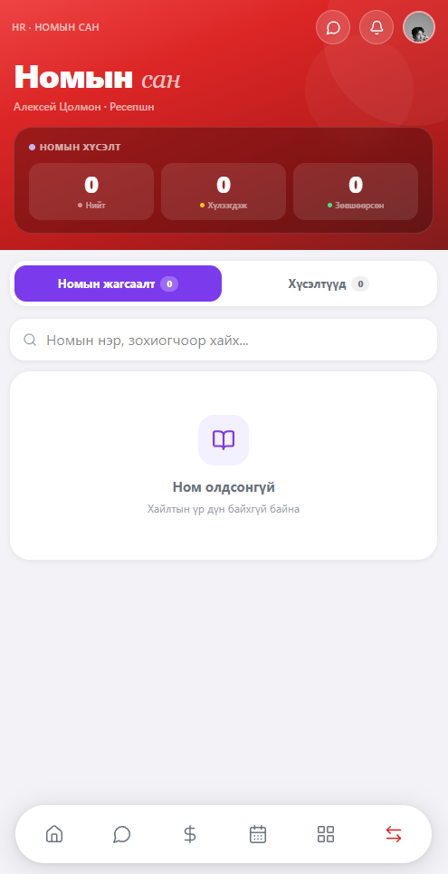
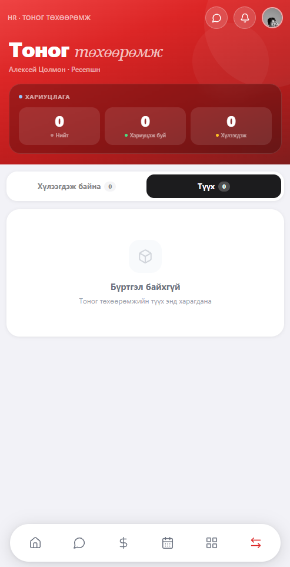
Ажлын орчны санал, хүсэлт, гомдлоо HR-т шууд илгээж, шийдвэрлэлтийг хянана.
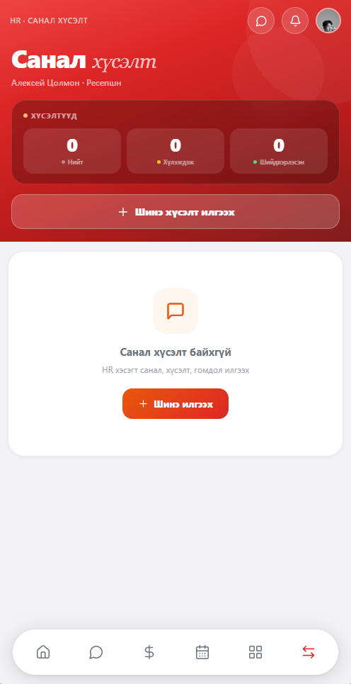
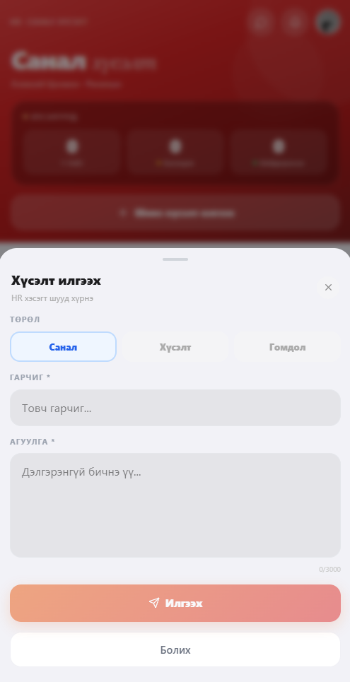
HR-ийн сануулгыг танилцах, өөрийн баримт бичгээ харах, татах.
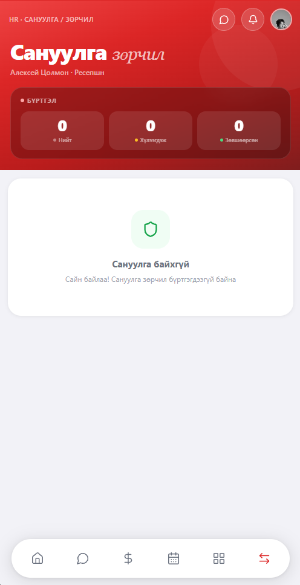
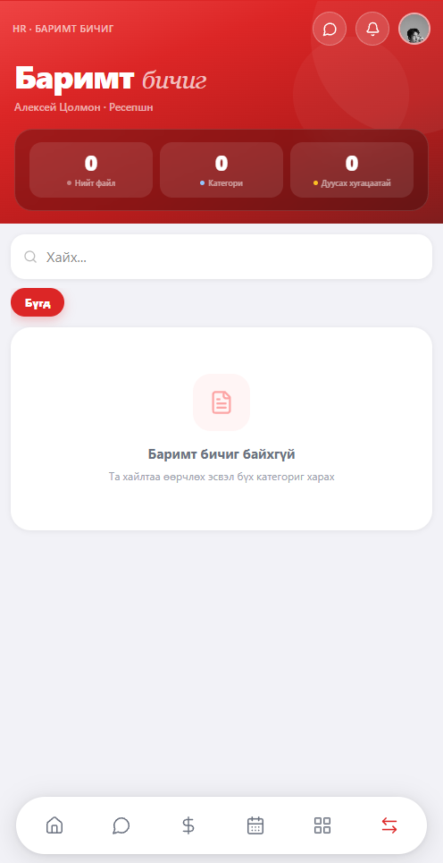
Доод цэсний ▦ товчоор бүх боломж, тохиргоо нэг дор нээгдэнэ.
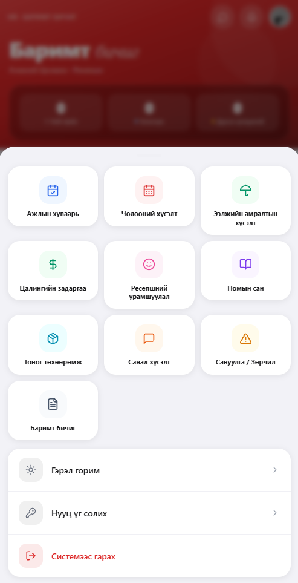
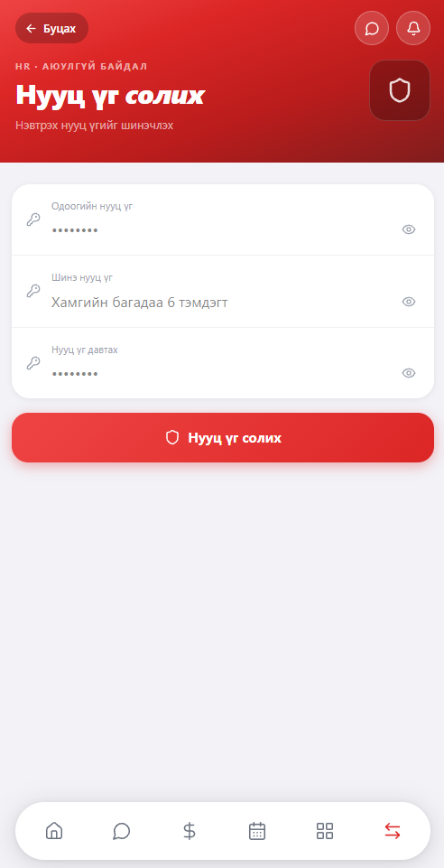
Дээд буланд байгаа зургаа дарж хувийн мэдээллээ харна.
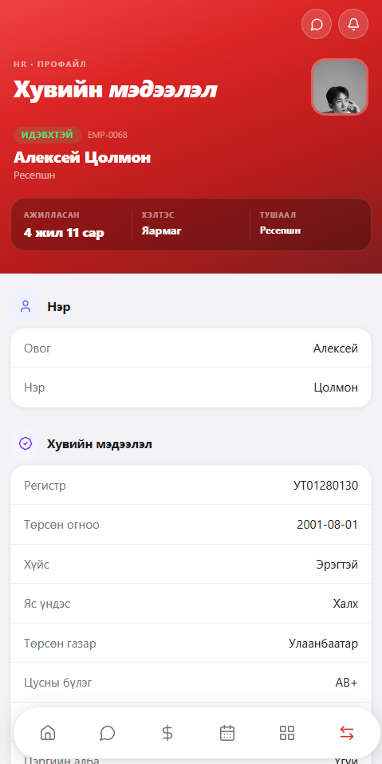